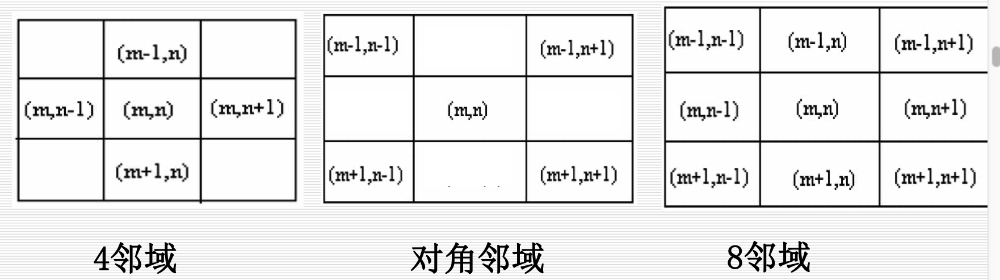
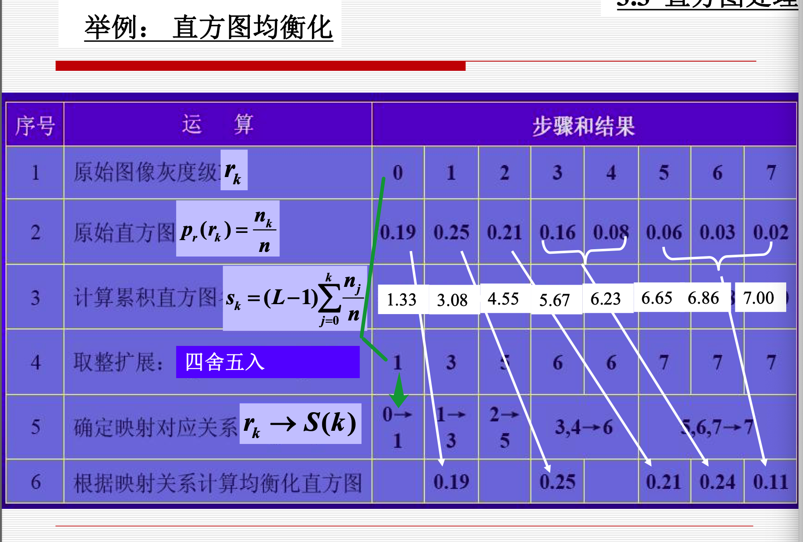
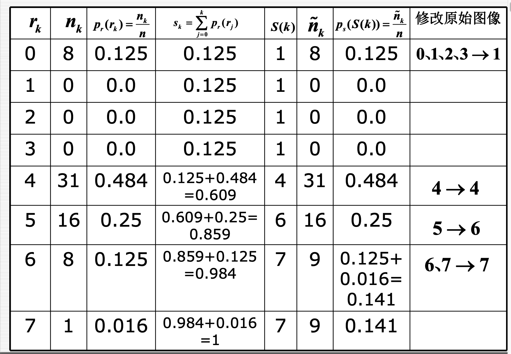
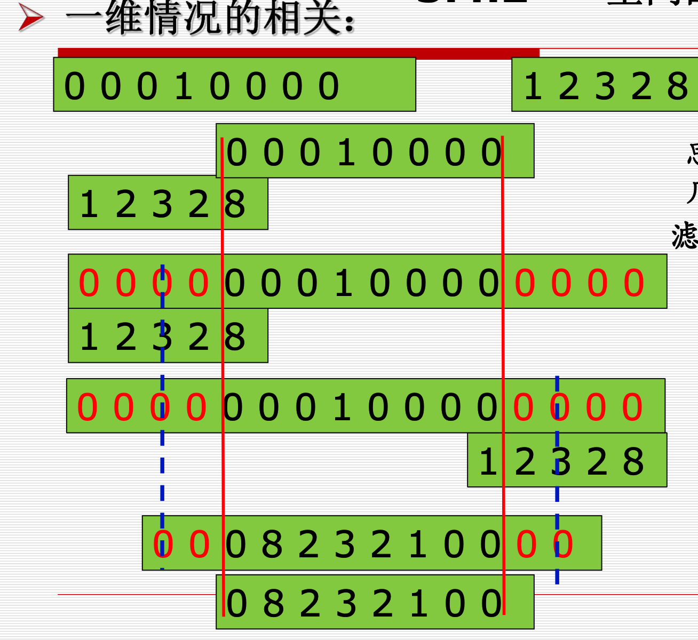
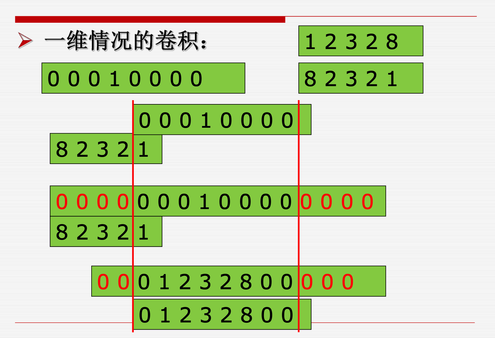
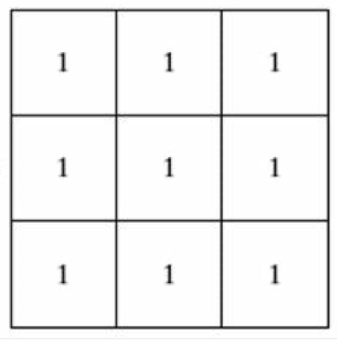
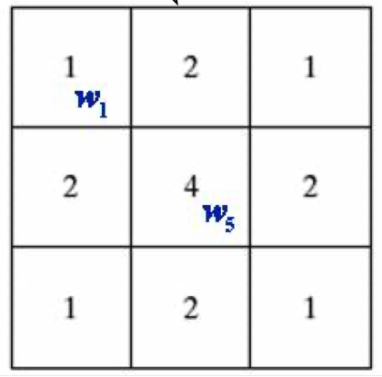

数字图像处理¶
第一章 绪论¶
1.1 DIP基本概念¶
1.1.1 图像的概念¶
- 模拟图像
- 模拟图像可用连续函数来描述。\(I = F(x, y)\)
- 其特点：光照位置(x, y)和光照强度I 均为连续变化的
- 数字图像
- 对模拟图像进行取样和量化，就可以得到离散形式的数字图像。
- 光照位置(x, y)和光照强度I 均用离散的数字表示，基本元素称为像素。
- 像素的属性：空间位置和灰度
1.1.2 图像处理的概念¶
1.2 DIP起源¶
略
1.3 DIP内容¶
八个方面
- 图像获取，表示和表现 Image Acquisition, Representation and Presentation
- 图像增强 Image Enhancement
- 图像复原 Image Restoration
- 图像重建 Image Reconstruction
- 图像压缩编码 Image Encoding
- 图像分割 Image Segmentation
- 目标识别 Pattern Recognition
- 图像理解Image Understanding
1.4 DIP实例¶
略
1.5 DIP系统的组成¶
- 图像采集模块
- 图像显示模块
- 图像存储模块
- 图像通信模块
- 主机
- 图像处理软件
第二章 数字图像基础¶
2.1 视觉感知要素¶
2.2 光和电磁波谱¶
2.3 图像感知和获取¶
2.4 图像取样和量化¶
数字图像生成需要
- 传感器输出
- 数字化
- 取样
- 量化
获取图像的目标是从感知的数据中产生数字图像， 但是传感器的输出是连续的电压波形，因此需要把连续的感知数据转换为数字形式。
这一过程就需要取样和量化。
数字化坐标值称为取样，数字化幅度值称为量化。
2.4.1 数字图像的表示¶
取样得到的数字图像有M行N列，则数字图像可以表示为MN的矩阵。矩阵中每一个元素成为图像元素或者像素*。
L为图像的灰度级，灰度的取值范围为[0, L - 1]。
一般，M, N, L取值为\(2^n\)形式，图像的许多计算可以得到简化。其中\(L=2^k\)，该图像称为k位图像。
存储一幅512×512，有256个灰度级的图像需要多少比特?
答: 存储一幅大小为M×N，有2k个不同灰度级的图像所用的 Bit数为: \(b=M×N×k\)
因此，存储一幅
512×512，有256个灰度级(k=8)的图像 需要\(512×512×8=2097152(Bit)\) 或$ 512×512=256K(Byte)$
2.4.2 空间分辨率¶
空间分辨率(spatial resolution)：每英寸点数（dots per inch）dpi每英寸点数图像中可分辨的最小细节。
跟采样间隔有关系，采样间隔值越小，空间分辨率越高。
2.4.2 灰度分辨率¶
通常也把灰度级L称为灰度分辨率。
总结：
图像的分辨率表示的是能看到图像细节的多少，显然依赖于M×N和L
- 保持
M×N不变而减少L则会导致假轮廓 - 保持
L不变而减少M×N则会导致棋盘状效果
图像质量一般随着M×N和L的增加而增加，但存储量增大。
实验表明图像的细节越多，用保持M×N恒定而增加L的方法来提高图像的显示效果就越不明显.因此，对于有大量细节的图像只需要少数的灰度级。
2.5 像素间基本关系¶
2.5.1 相邻¶
\(N_4(P), N_D(P), N_8(P)\)

注意：坐标原点在左上角，X轴正方向为竖直向下，Y轴正方向为水平向右。
2.5.2 邻接¶
像素的相邻仅说明了两个像素在位置上的关系，若再加上取值相同或相近，则称两个像素邻接。
条件：
- 位置相邻
-
灰度值满足\(p\in V, q \in V, 其中 V={v1, v2, ...}\)称为灰度值相近(似)准则。
-
四邻接: 若像素p和q的灰度值均属于V中的元素，且q在\(N_4(P)\)中，则p和q是4邻接的。
- 八邻接：若像素p和q的灰度值均属于V中的元素，且q在\(N_8(P)\) 集中,则p和q是8邻接的。
- m邻接（混合邻接）：若像素p和q的灰度值均属于V中的元素，
- q在\(N_4(P)\)中 或
- q在\(N_D(P)\)中，且集合\(N_4(p)∩N_4(q)\)没有V值的像素，则具V值的像素p，q是m邻接的。
V值的像素},则具有V值的像素p和q是m邻接的。
2.5.3 通路¶
m邻接帮助消除通路二义性，只准m邻接之间直达。
2.6 线性和非线性操作¶
第三章 空间域图像增强¶
3.1 背景知识¶
3.2 基本灰度变换¶
3.3 直方图处理¶
横坐标\(r_k \in [0, L-1]\)，纵坐标对应该灰度级的像素个数。
直方图均衡化公式一览图：

直方图均衡化详细过程举例：

3.4 空间滤波基础¶
- 相关:滤波器模板移过图像并计算每个位置乘积之和。
- 卷积:跟相关机理相似，但滤波器模板要先旋转180度，再进行移动求乘积之和。
注意：当处理的像素是边界像素时，一 般先进行像素填充，即在像素一侧补0.
3.4.1 一维空间相关¶

3.4.2 一维空间卷积¶

3.5 平滑空间滤波器¶
3.5.1 平滑线性滤波器¶
均值滤波器
公式：
\(g(x, y)=\frac{\sum_{s=-a}^{a} \sum_{t=-b}^{b} w(s, t) f(x+s, y+t)}{\sum_{s=-a}^{a} \sum_{t=-b}^{b} w(s, t)}\)
下图对应：$\frac{1}{9}*\sum_{i=1}^{9}z_i $

3.5.2 平滑空间滤波器¶
加权均值滤波
公式：
\(g(x, y)=\frac{\sum_{s=-a}^{a} \sum_{t=-b}^{b} w(s, t) f(x+s, y+t)}{\sum_{s=-a}^{a} \sum_{t=-b}^{b} w(s, t)}\)
下图对应 $\frac{1}{16}*\sum_{i=1}^{9}w_iz_i $

中值滤波器
取模版区域的中值作为中心的值。
3.6 锐化空间滤波器¶
与平滑相对应，锐化主要是突出细节。
锐化处理可以用空间微分来完成. 微分算子的响应强度与图 像在该点的突变程度有关，图像微分增强了边缘和其他突变 （如噪声）而消弱了灰度变化缓慢的区域。
3.7 混合空间增强法¶
第四章 频率域滤波¶
4.1 背景知识¶
4.2 时域频域¶
4.3 二维傅里叶变换的性质¶
- 平移性
- 在频域中F原点平移到(u0 ,v0)时，其对应的空间域 f(x,y)要乘上一个正的指数项。
- 在空域中f图像原点平移到(x0,y0)时，其对应的F(u,v)要乘上一个负的指数项。
- 旋转性
- 原图像f旋转一定角度 等价于 傅里叶变换后图像F旋转相同角度
- 周期性
- 对称性
- 属于共轭对称（当两个复数实部相等,虚部互为相 反数时,这两个复数叫做互为共轭复数）
- 线性性质
- \(af(x, y)+bg(x, y) \iff aF(u,v)+bG(u,v)\)
- 尺度定理
- 幅度尺度：\(af (x, y) \iff aF(u,v)\)
- 空间尺度：\(f(a x, b y) \Leftrightarrow \frac{1}{|a b|} F\left(\frac{u}{a}, \frac{v}{b}\right)\)
图像和频谱图的关系
- 图像的能量分布：如果频谱图中暗点多，那么实际图像是柔和的。因为各点与邻域灰度差异都不大，梯度相对较小。反之，如果亮点多，那么实际图像是尖锐的，边界分明且边界两边像素差异较大的。
- 图像的频谱分布：频谱移频到显示屏中心后，图像的频谱分布是以中从谱图像中可看出：图像频谱的分布是以中心为圆心，对称分布的。